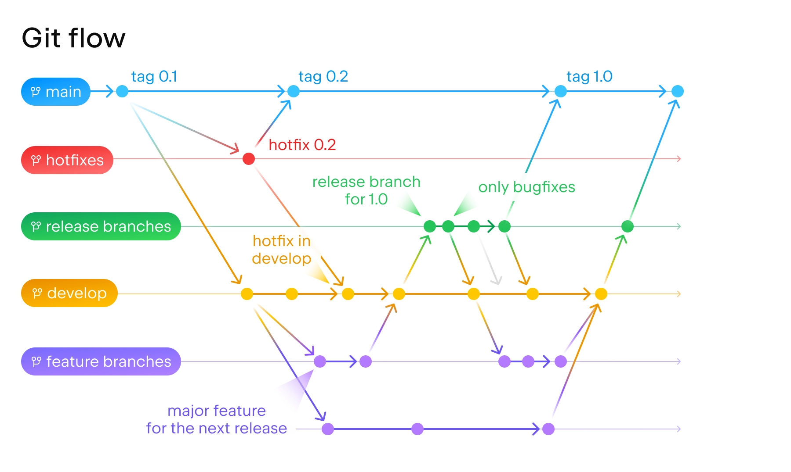

ARA Engineering Coding Convention
Coding Convention Types
- PascalCase
RandomClass, CodingConvention, RotateXY(), ...
- camelCase
randomClass, codingConvention, rotateXY(), ...
- snake_case
random_class, coding_convention, rotate_xy(), ...
- UPPER_CASE
PI = 3.14, EULER_NUM = 2.718, GOLDEN_RATIO = 1.618, ...
- Naming Rules
- Variables
- snake_case
var_a, var_b, var_c, ...
-
Methods, Classes
- PascalCase
RotateXY(), DrawPipe(), ...
- Constants
- UPPER_CASE
PI = 3.14
PI = 3.14
- boolean-specific prefix
'is_' prefix
is_alive = falseis_human = trueis_animal = false
C#
- PascalCase
- Class, Interface, Struct, Delegate, Methods
public members
- camelCase
private/internal fields- local variables, including instances of a delegate type
- UPPER_CASE
- Prefixes
- Interface :
I
private static
private static string s_clientAddress
private thread static
[ThreadStatic]
private static TimeSpan t_timeSpan
Python
- snake_case
- camelCase
- UPPER_CASE
- Constant values, Global variables
C++
- PascalCase
- Class, Struct, Interface,
public members
- camelCase
- UPPER_CASE
- Prefixes
GitHub Convention
- Username
- {FirstName+LastName}-ARA
SuhjuneYim-ARA, CheolSuKim-ARA, GildongHong-ARA, ...
Follow Pascal case for the following:
- Repository
- Created by project leader
- {Objective} or {Project Name}
- Branch
- 5 types of branches :
- main
- develop / dev
- hot fix
Created from main
Only merge into main and develop branches
- release
Created from develop branch
Only commit bug fixes
- feature
Created from develop branch
"Feature_" prefix
Feature_CentreLine, Feature_ImageProcessing, ...
- Directory
/Scripts/Library/ImageProcessing
- File
OpenSourceLibrary.py, MyLibrary.cs, ...
Reference Image

Version Control System (VCS)
- GitHub
- Always set repositories as private unless specified